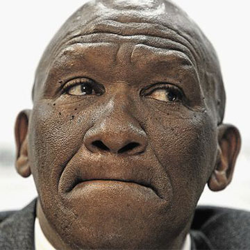
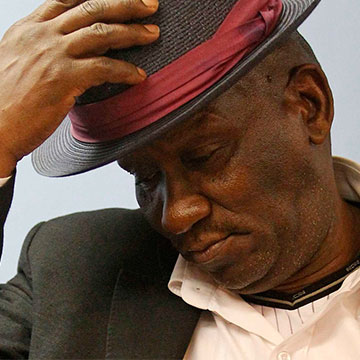

THE FIVE BIGGEST CASES OF THE PUBLIC PROTECTOR
-
Thuli Madonsela is appointed
2009, October 19
Thuli Madonsela was appointed in 2009. Her predecessor, Lawrence Mushwana, was accused of being executive minded, having come down on the side of government one too many times, in cases that analysists insisted should have swung the other way. Many thought the Office of the Public Protector had no teeth.
(photo credit: News24)
-
Police chief Bheki Cele implicated in leasing scandal
2011, February 22
Less than a year into her term, Madonsela's office receives a complaint about a leasing deal involving the leasing buildings in Durban and Pretoria to the Department of Public Works, for use by the SAPS. It will be her first politically-charged case, as it involves then-National Police Commissioner, Bheki Cele and a well-connected businessman and owner of the buildings, Roux Shabangu. Madonsela finds that the lease was unlawful, and although she does not find that the SAPS was directly involved in influencing the deal, she recommends that action should be taken against the officials involved. Flowing from this, a board of inquiry is instituted to investigate Cele's fitness to hold office. He is dismissed
(photo credit: TimesLive)
-
Minister Sicelo Shiceka's Swiss splurge
2011, October 11
In April 1011, Madonsela investigated complaints that now-deceased minister Sicelo Shiceka splurged state funds on a trip to visit his girlfriend in Switzerland, and spent excessive amounts on hotel stays. She found that he had done so, and that the money spent by his department was "of no value to the state". Shiceka died in 2012.
(photo credit: Daily Maverick)
-
Julius Malema's on point tender deal
2012, October 10
Julius Malema and his business associates were investigated, following claims that then-ANCYL leader influenced Limpopo government officials to award tenders to a company he was linked to. While Madonsela could find no evidence that Malema used his influence, she found that the tenders were illegally awarded and recommended that they be cancelled.
(photo credit: TimesLive)
-
Hlaudi with a chance of thunder
2014, February 4
SABC COO Hlaudi Motsoeneng is reported to the PP. It's alleged that he faked his matric certificate, irregularly hiked his salary, made improper appointments and abused his power. Madonsela finds that this is exactly what he did. She recommends that disciplinary action should be taken against him and other implicated officials.
-
Watch Video
(credit: eNCA)
-
-
Nkandla: #PayBackTheMoney
2014, March 19
Madonsela finds that the upgrades to President Jacob Zuma's house - a cattle kraal, chicken run, swimming pool and more - improperly benefited him and his family, and orders him to pay back a portion of the money.
-
Watch Video
(credit: eNCA)
-